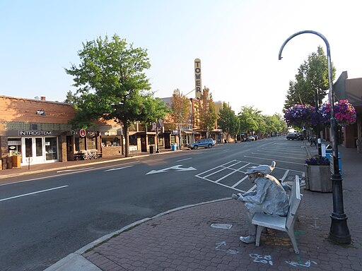

Bend, Oregon
Bend: Living at Its Best
| City | Founded |
Region

|
Population | Urbanicity | Affluence |
|---|---|---|---|---|---|
| Bend | 1904 | Central Oregon | 104,557 | Mixed | Above Average |
Did you know?

- Bend started out as a logging town when it was incorporated in 1905, but has since become a tourist city. 3
- Bend is home to the last Blockbuster Video, which became the last in existence in March 2019. 4
- Bend was referred to as Farewell Bend because of the nearby Deschutes River bend. Since Farewell Bend was already an applied post office, the USPOD shortened the name to "Bend". 3